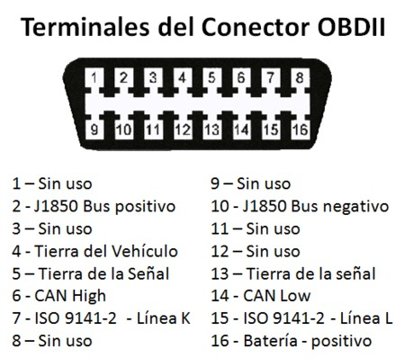

Descripcion del conexionado

Según el protocolo de comunicación que utilice el vehículo los pines habilitados
en el conector serán diferentes.
El protocolo ISO 9141/14230 utiliza los pines 6 y 15,
el protocolo J1850 PWM
utiliza el 2 y el 10,
el protocolo J1850 VPW utiliza solo el pin 2, y
el protocolo ISO
15765 (CAN), el pin 6 y 14.
Todos los protocolos utilizan como fuente de
alimentación los pines 4 y 5 (masa chasis y masa señal respectivamente), y el pin
16 (+12V).
Analizando la respuesta
� La ECU contesta con la siguiente trama y la interface la recoge para
enviarla al puerto serie:
6A F1 61 41 0C 0B 88 0A ->
Respuesta ECU
01 0C ->
Respuesta
6A F1 61 41 0C 0B 88 0A Interface
Se puede observar que la interface le añade a la trama el comando
solicitado
Por tanto en la respuesta obtenida podemos diferenciar que:
01 0C: Comando requerido
6A F1 61: Cabecera de la trama(Especifica direcciones de memoria,
prioridades, tipo de conexión, etc..)
41 0C: Confirmación de que se ha contestado al comando requerido
sumando 40 a 01, quedando 41 0C.
0B 88: El dato que interesa para calcular las rpm. Según el documento
OBD Pid’s anteriormente mencionado, si pasamos a decimal estos
valores quedando en 11 y 136, y aplicamos esta fórmula
(( ) ) ( )
738
4
11 256 136
4
256
=
⋅ +
=
A⋅ + B
, obtenemos las revoluciones por
minuto del motor a tiempo real.
0A:
Chequeo de redundancia cíclica de la trama (CRC).
Vemos que podemos seleccionar el protocolo de comunicación o dejar
seleccionada la opción “Automatic detection of communication protocol”, para
que sea autodetectado. Esta sección también nos proporciona la posibilidad de
modificar las cabeceras de las tramas que se van a enviar. Cada opción (Priority,
ECU Addres, Tool address) se corresponde con un byte dentro de la trama, esto
aumenta las posibilidades de éxito en el momento de conectarse con la ECU, ya
que aunque muchos modelos de centralitas se comunican de la misma forma,
necesitan que se les especifique este parámetro y por tanto modificar el que se
envía por defecto.